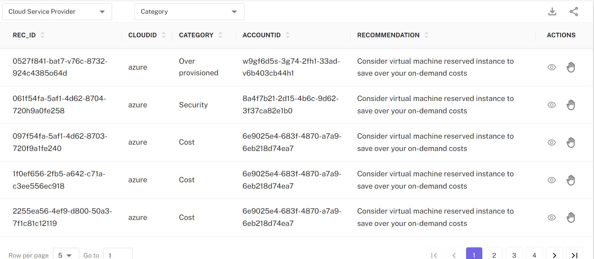

CloudPi Optimizations
The Cloud Optimization Recommendations feature in CloudPi is a comprehensive toolset designed to help organizations maximize their cloud efficiency and minimize costs. By analyzing usage patterns and infrastructure configurations, CloudPi provides tailored recommendations across various aspects of cloud management. These recommendations are categorized into savings plans recommendations, usage optimizations, and cloud-native recommendations, each aimed at enhancing performance and cost-effectiveness.
PiSavings Recommendations
The Pi Savings feature of CloudPi offers a sophisticated tool designed to optimize cloud spending through deep analytical insights into users' current cloud usage and existing savings plans. This feature enables users to compare various savings plan options based on their unique usage patterns and financial goals, helping them identify the most cost effective strategies.
Key capabilities of PiSavings
Detailed Analysis: Users can view and assess their cloud usage pattern suitable for SP and RI’s in easy to understand way.
Comparison Tool: This tool allows users to input their usage data to compare different savings plans side by side, providing clear recommendations on which plans offer the best savings.
Automated Processes: Once a suitable savings plan is selected, Pi Savings can automate the creation of tickets within the user’s existing workflow system, facilitating seamless management and implementation of the new plan.
Overall, Pi Savings empowers users to make informed decisions that enhance their financial efficiency and align with their organizational objectives in cloud management.
How SP Recommendations work?
In PiSavings, specifically in SP Recommendations page you find the project resources current usage pattern based on region and account id, CloudPi intelligently develops and presents to you current commitment requirement, current average demand and potential estimated savings. For each opportunity you will have option to generate recommendations in graphical and tabular view for choosing best plan based on your situation and forecast.
The Savings Plan Recommendation provides insights and recommendations for purchasing Savings Plans for optimal coverage based on Account ID selected.

Generate SP Plan: When clicking on 'Generate', you can view Account ID, Region and Current average hourly OnDemand spend which allows you to review and edit based on your business forecast before generating a saving plan.

Graphical View and Estimated Savings: Graphical View provide comparison visual representation of your Savings Plans options. A side panel presents various saving options, showing the duration (1-year or 3-year) and the cost structure (On Demand, All Upfront, Partial Upfront, No Upfront). Choose the most suitable plan according to the estimated savings and upfront payment preference.

Auto Ticketing: Based on analysis you can choose your savings plan and you can automatically 'Raise Ticket' and view populated fields such as title, Description, Priority, Status. Finally click ‘Create Ticket’ to workflow tool you setup for your organization.

RI Recommendations Plan
The RI Recommendation provides insights and recommendations for purchasing Reserved Instances to optimize cloud spending based on Account ID selected.

Generate RI Plan: When clicking on 'Generate', you can view Account ID, Region, Instance Family and Average number of instances used per hour which allows you to review before generating a RI plan.

Graphical View and Estimated Savings: A graphical view shows your spending trends over the months. The Estimated Savings section compares various plan durations and payment terms (e.g., 1-year vs. 3-year, all upfront vs. partial upfront).

Raising a Ticket: If you have an issue, you can 'Raise Ticket' and view the fields such as title, Description, Priority, Status and Submit to and click on “Create ticket” button.

CloudPi Usage Recommendations
Resource Right-Sizing: Based on your actual cloud usage, CloudPi advises on scaling your resources up or down. This ensures that you are neither over-provisioning nor under utilizing, optimizing both cost and performance.
Efficiency Enhancements: Identify underused resources, such as unattached volumes or idle VMs, and receive actionable insights on how to redeploy or decommission them to cut unnecessary expenses.
Dashboard Integration: Access these recommendations directly through the CloudPi dashboard, where they are regularly updated based on continuous monitoring of your cloud environment.
Actionable Insights: Each recommendation includes detailed steps and justifications, allowing IT teams to understand the potential impacts and implement changes confidently.
Monitoring and Adjustments: After applying recommended changes, CloudPi continues to monitor the environment to ensure that optimizations are effective and aligned with your evolving needs.
Cloud Native Recommendations
Overview
CloudPi's Cloud Native Recommendations feature is designed to seamlessly integrate and enhance recommendations generated by leading cloud providers such as AWS (including AWS Trusted Advisor), Google Cloud, and Azure. This feature empowers users by enriching these recommendations with additional context and enabling efficient management and execution through the CloudPi platform.
Key Features
Integration with Cloud Provider Tools:
-
Comprehensive Ingestion: CloudPi ingests recommendations from AWS Trusted Advisor, Google Cloud recommendations, and Azure advisories, providing a unified view of optimizations across your cloud environments.
-
Enhanced Details: Each recommendation is supplemented with enriched information to provide a clearer understanding of the implications, benefits, and practical steps needed for implementation.
Actionable Insights for IT Teams:
- Ticketing System Integration: Users can easily raise tickets directly from the CloudPi interface for any cloud-native recommendation. These tickets include enriched details necessary for IT teams to evaluate and prioritize actions.
- Prioritization and Effort Management: Recommendations are categorized and can be prioritized based on the impact and effort required for implementation. This allows IT teams to effectively allocate resources and address the most critical optimizations first.
Benefits
- Streamlined Operations: By consolidating recommendations from multiple cloud providers in one platform, CloudPi simplifies the management of cloud optimizations.
- Informed Decision-Making: Enhanced information helps clarify the potential impact and necessary steps for each recommendation, aiding in better decision-making processes.
- Efficient Resource Allocation: Prioritizing recommendations based on impact and required effort ensures that resources are used efficiently, focusing on changes that offer the greatest benefits.
Navigating the Feature
- Accessing Recommendations: Navigate to the Cloud Native Recommendations section on the CloudPi dashboard to view all current recommendations from AWS, Google Cloud, and Azure.
- Raising Tickets: When a recommendation aligns with strategic goals or operational needs, users can raise a ticket directly within CloudPi. This ticket will encapsulate all the enriched details, making it ready for review and action by IT teams.
- Managing and Prioritizing Recommendations: IT teams can manage these tickets through CloudPi’s integrated workflow tools, prioritizing them based on the effort required and potential impact. This management helps streamline the implementation process and ensures that critical optimizations are deployed promptly.
CloudPi’s Cloud Native Recommendations feature not only simplifies the task of managing recommendations from various cloud platforms but also enhances them with vital information and tools needed for effective implementation. This capability allows organizations to maximize their cloud efficiency, reduce costs, and leverage the full potential of their cloud investments.
